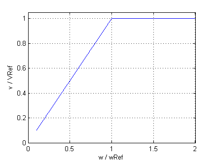

CoreModel of core losses |
Information
This information is part of the Modelica Standard Library maintained by the Modelica Association.
Core losses can be separated into eddy current and hysteresis losses. The total core losses can thus be expressed as
P = PRef * (ratioHysteresis * (wRef / w) + 1 - ratioHysteresis) * (V / VRef)^2
where w is the actual angular remagnetization velocity and V is the actual voltage.
The term ratioHysteresis is the ratio of the hysteresis losses with respect to the total core losses for the reference voltage and frequency.
In the current implementation hysteresis losses are not considered since complex numbers are not provided in Modelica.
Therefore, implicitly ratioHysteresis = 0 is set. For the voltage and frequency range with respect to Fig. 1,
the dependency of total core losses on the parameter ratioHysteresis is depicted in Fig. 2.
The current implementation has thus the drawback over a model that considers ratioHysteresis > 0:
- underestimation of the losses in the constant field region (
w<wRef) - overestimation of the losses in the field weakening region (
w>wRef)
|  |
| Fig. 1: Voltage versus angular velocity |
 |
Fig. 2: Core losses versus angular velocity with parameter ratioHysteresis |
Note
In the current implementation it is assumed that ratioHysteresis = 0. This parameter cannot be changed due to compatibility reasons.
See also
Parameters (3)
| useHeatPort |
Value: false Type: Boolean Description: =true, if heatPort is enabled |
|---|---|
| coreParameters |
Value: Type: CoreParameters |
| turnsRatio |
Value: Type: Real Description: Effective number of stator turns / effective number of rotor turns (if used as rotor core) |
Inputs (1)
| w |
Type: AngularVelocity (rad/s) Description: Remagnetization angular velocity |
|---|
Connectors (2)
| heatPort |
Type: HeatPort_a Description: Optional port to which dissipated losses are transported in form of heat |
|
|---|---|---|
| spacePhasor |
Type: SpacePhasor |
Components (1)
| coreParameters |
Type: CoreParameters |
|---|
Used in Components (2)
|
Modelica.Electrical.Machines.BasicMachines.AsynchronousInductionMachines Asynchronous induction machine with slipring rotor |
|
|
Modelica.Electrical.Machines.Interfaces Partial model for induction machine |